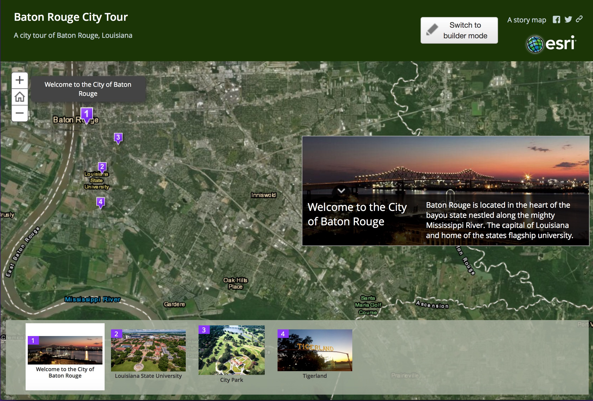
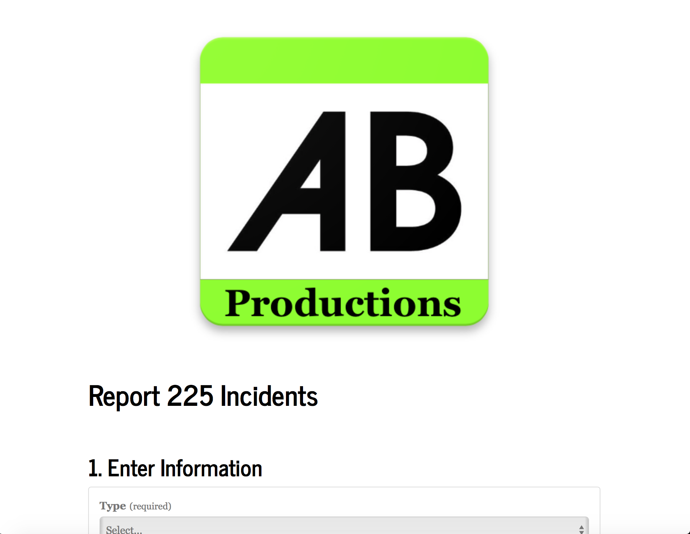
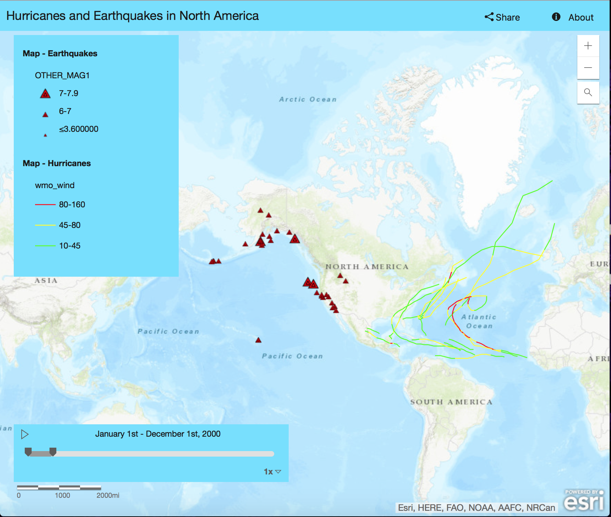
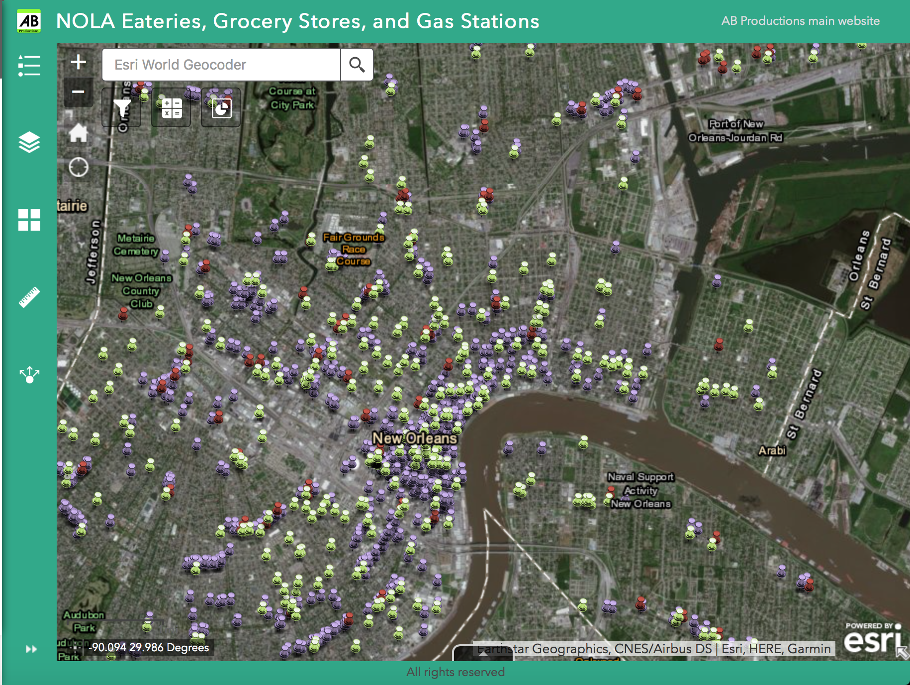
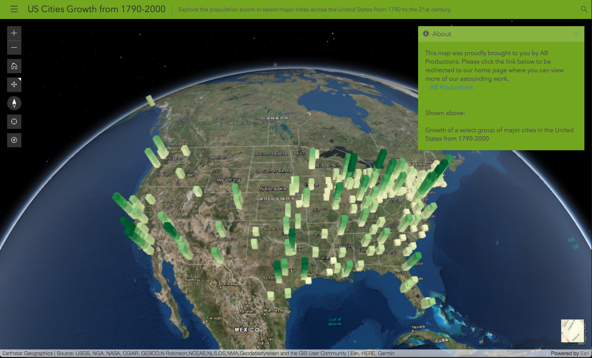

That Good GIS
Portfolio:
Just a small taste of AB Productions capabilites. Updated weekly, we produce only the highest quality GIS Web App
Book Assignment 01
Baton Rouge City Tour A map of a the Beautful City of Baton Rouge, Louisiana. This map highlights four well known geographical locations throughout the historic city.

Book Assignment 02
2.5+ Magnitude Earthquakes in past 24 hoursThis is an interactive map of the all the earthquakes around the world. Updating every 5 minutes, this map also provides a link in the popup that directs you to the USGS website for that particular earthquake.

Book Assignment 03a
Report 225 Incidents An interactive map showing incidents around LSU's campus, allowing users to update and report incidents as they happen.

Book Assignment 05
BREC Parks AB Production's spin on web map showing all the BREC Parks in the Baton Rouge region including all it's ammentites.

Book Assignment 06a
Hurricanes and Earthquakes in North America A time scale map of North America showing all the Earthquakes and Hurrianes in the country from 2000-Current.

Midterm Assignment-Analysis Widget
NOLA Eateries, Grocery Stores, and Gas Stations-Analysis Interactive map of all the Eateries, Gas Stations, and Grocery Stores in the New Orleans area. Featuring two editable analysis widgets.

Midterm Assignment-Viewer
NOLA Eateries, Grocery Stores, and Gas Stations-Viewer Much as the above map this is also an interactive map of all the Eateries, Gas Stations, and Grocery Stores in the New Orleans area. Featuring 8 total interactive widgets.

Book Assignment 09
US Cities Growth from 1790-2000 Shown above is an expample of our scene viewer capablites. This particular map shows the growth of some major US cities from 1790-2000 using 3-D figures to aid in analysing the information.
